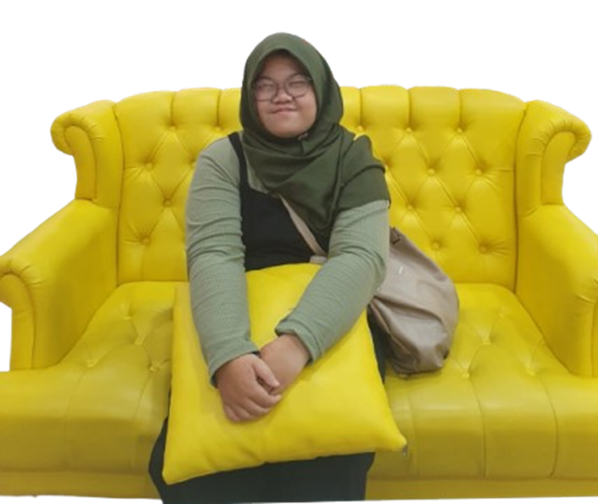

Nasyaldha Indrianto
Data Analyst • Web Developer • Coding Enthusiast

Tentang Saya
Lulusan Matematika dari Universitas Udayana yang proaktif dan memiliki ketertarikan besar dalam mengembangkan keahlian di bidang analisis data serta software engineering.
Menguasai Python, Tableau, R, SQL, dan Microsoft Office. Saya juga memiliki keahlian dalam pengembangan web menggunakan HTML, CSS, dan JavaScript, serta terbiasa bekerja menggunakan Visual Studio Code.
Berpengalaman selama 3 tahun di bidang marketing dan pengajaran di lembaga bimbingan belajar, saya telah mengasah kemampuan public speaking, pengambilan keputusan cepat, serta berpikir kritis.
Saya antusias mengeksplorasi tantangan baru dan terbuka untuk kesempatan mengembangkan keterampilan dalam lingkungan kerja yang dinamis dan kolaboratif.
Pendidikan
Pengalaman Kerja
PT. Sapta Bhuana Caraka (LKP Science Society)
Math Teacher & Marketing (2021–Sekarang)
Tangerang Selatan
Meningkatkan performa siswa 50% per tahun, 90% feedback positif.
Comifuro dan Cocoma
Booth Assistant (2023–2024)
Menyambut dan menjelaskan produk kepada lebih dari 300 pengunjung setiap hari.
Pengalaman Organisasi
BEM FMIPA Udayana – Divisi Keuangan (2017–2018)
Bertanggung jawab pada sponsorship & pengelolaan dana.
📄 Lihat Dokumen Organisasi
Portofolio
Sertifikat
Proyek

Google Form & Google Sheets

1. Sistem Penjadwalan Siswa dengan Slot Terbatas
Tools: Google Form, Google Sheets, Add-on Form Ranger
Deskripsi: Membuat form pendaftaran jadwal untuk siswa dengan kuota terbatas per kelas. Add-on digunakan untuk mengupdate daftar pilihan kelas secara real-time berdasarkan kuota tersisa.
2. Jadwal Tentor Otomatis dengan Tampilan Konsolidasi
Tools: Google Form, Google Sheets
Rumus: IFERROR, INDEX, MATCH
Deskripsi: Tentor mengisi jadwal via Form, dan datanya otomatis ditampilkan dalam tampilan jadwal umum di spreadsheet. Mempermudah koordinasi dan menghindari konflik jadwal.
3. Otomatisasi Reset Sheet Mingguan dengan Apps Script
Tools: Google Apps Script
Deskripsi: Mengembangkan skrip otomatis yang menggantikan isi sheet tertentu setiap hari Senin tanpa input manual. Proses ini membantu menjaga data mingguan tetap rapi dan efisien.
4. Sistem Pelaporan Tentor yang Bisa Dibaca User
Tools: Google Form, Sheets
Deskripsi: Merancang sistem pelaporan kegiatan tentor yang hasilnya tersusun otomatis dan dapat dibaca oleh pengguna lain. Output dilengkapi format visualisasi dan validasi data.
🎓 Website Tugas Bootcamp RevoU
Ini adalah project pertama saya saat mengikuti Bootcamp. Tujuannya untuk memahami dasar HTML, CSS, dan struktur website sederhana. Dibuat dalam konteks tugas di Coding Camp RevoU tanggal 14 Juli 2025.
Lihat ProjectLihat Kode di GitHub
🌱 Portfolio Mandiri
Ini adalah project yang saya buat secara mandiri untuk memperdalam skill HTML, CSS, dan JavaScript. Tidak ada kendala tugas — bisa fokus eksplorasi kreatif dan fungsionalitas tambahan.
Lihat ProjectLihat Kode
📊 Data Visualization Projects
📑 Google Slide: Presentasi Analisis Data
Presentasi interaktif yang berisi analisis data terkait topik tertentu. Menyajikan insight dalam bentuk storytelling visual.
Lihat Project🏥 Tableau: Analisis Fasilitas Kesehatan
Dashboard interaktif untuk mengeksplorasi data fasilitas kesehatan. Menampilkan distribusi, kapasitas, serta perbandingan antar daerah.
💳 Tableau: Jaminan Kesehatan
Dashboard interaktif untuk menganalisis jaminan kesehatan masyarakat. Menyediakan insight mengenai cakupan dan tren dari tahun ke tahun.